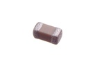
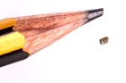

SMD (0603) 1 nF Capacitor (Ceramic) - C6N001
Summary
Name: SMD (0603) 1 nF Capacitor (Ceramic)
ID: CAPC-0603-X-NF1-01
Hex ID: C6N001
WebPage: https://github.com/oomlout/oomlout-OOMP/wiki/CAPC-0603-X-NF1-01
Short URL: http://oom.lt/C6N001
Revision History: https://github.com/oomlout/oomlout-OOMP/blob/master/parts/CAPC-0603-X-NF1-01/
| Type |
Size |
Color |
Description |
Index |
CAPC
Capacitor (Ceramic) |
0603
SMD (0603) |
X
|
NF1
1 nF |
01
|
Images


About
This part is awaiting a description.
Specifications
| Info |
Value |
| Type |
Capacitor (Ceramic) |
| Size |
SMD (0603) |
| Description |
1 nF |
| Width |
0.8 mm |
| Length |
1.6 mm |
| Maximum Voltage |
50v |
| Tolerance |
10% |
Extra Details
Spotted a mistake, want to add more? Let us know oomp@oomlout.com
All images and resources are licensed [CC BY-SA] unless otherwise stated (ie. the datasheets)